Data Warehousing
Data warehousing is the process of collecting, integrating, storing and managing data from multiple sources in a central repository. It enables organizations to organize large volumes of current and historical data for efficient querying, analysis and reporting.
Note
The main goal of data warehousing is to support decision-making by providing clean, consistent and timely access to data. It ensures fast data retrieval even when working with massive datasets.
Data Warehouse Architecture#
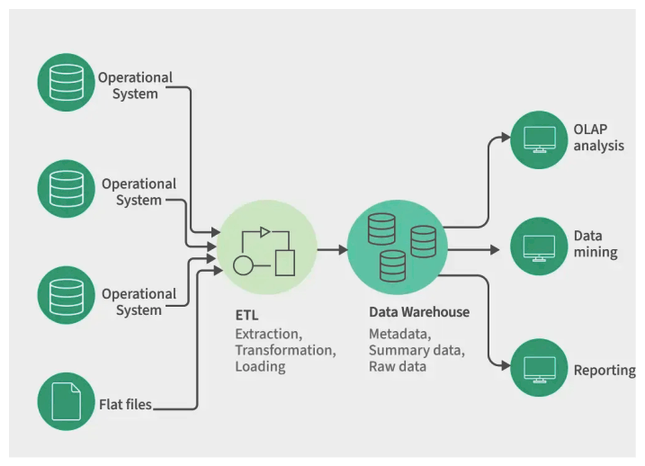
--- Need for Data Warehousing
- Handling Large Data Volumes
- Enhanced Analytics
- Centralized Data Storage
- Trend Analysis
- Business Intelligence Support
- Data Sources
- Data Warehouse Database
- Metadata
- Data Marts
- OLAP (Online Analytical Processing) Tools
- End-User Access Tools
--- Types of Data Warehouses
- Enterprise Data Warehouse (EDW)
- Operational Data Store (ODS)
- Data Mart
- Cloud Data Warehouse
- Big Data Warehouse
- Virtual Data Warehouse
- Hybrid Data Warehouse
- Real-time Data Warehouse
--- DBMS vs DataWarehouse
| Aspect | Database (DBMS) | Data Warehouse |
|---|---|---|
| Purpose | Designed for operational / transactional processing (OLTP) | Designed for analytical processing (OLAP) |
| Type of Data | Stores current and up-to-date data | Stores historical data over long periods |
| Data Usage | Used for day-to-day operations | Used for trend analysis, reporting, and decision-making |
| Transaction Handling | Each operation is an indivisible transaction | Optimized for complex queries and aggregations |
| Data Scope | Usually application-specific | Integrated at organization level |
| Data Sources | Typically sourced from a single application | Combines data from multiple databases and sources |
| Data Structure | Highly normalized to reduce redundancy | Often denormalized (star/snowflake schemas) |
| Time Dimension | Mostly current state data | Maintains time-variant data |
| Query Type | Simple inserts, updates, deletes, and selects | Complex analytical queries (GROUP BY, JOINs, aggregates) |
| Performance Focus | Fast read/write transactions | Fast read-heavy analytical queries |
| Cost | Relatively inexpensive to construct and maintain | Can be expensive due to storage, ETL, and infrastructure |
| Users | End users, applications | Data analysts, BI tools, decision makers |
| Examples | Student records in a school database | Analyzing best-performing schools across a city |
--- We can only store Structured Data in Data Warehouse?
Traditionally, data warehouses were designed to handle structured data - that is, data that fits neatly into a table with rows and columns, like you would find in a relational database or an Excel spreadsheet. This structured data could be analyzed using SQL or similar querying languages.
However, with the advent of Big Data, the nature of data has evolved. Today's organizations also need to handle semi-structured data (like JSON or XML files) and unstructured data (like text documents, images, videos, etc.) to extract insights. Consequently, the concept of data warehousing has also evolved.
Modern data warehouses have extended their capabilities and can now accommodate, process, and analyze semi-structured and even unstructured data. For example, solutions like Google's BigQuery, Amazon's Redshift, and Snowflake allow users to query non-relational data types including nested and repeated data.
However, while it's possible to store and query unstructured and semi-structured data in a modern data warehouse, often it's not the most efficient or cost-effective way to handle such data. For many use cases, it may be more appropriate to use other types of data storage and processing systems, like data lakes or NoSQL databases, which are specifically designed to handle these types of data. These systems can then work in conjunction with a data warehouse as part of a broader data architecture.
Note
It's important to note that implementing a data warehouse is not a trivial task. It involves data cleaning, data integration, and data transformation tasks that can be complex and time-consuming. Therefore, the decision to create a data warehouse should take into consideration the specific needs of the organization, the availability of resources, and the potential return on investment.
OLTP#
OLTP, or Online Transaction Processing, is a class of software applications capable of supporting transaction-oriented programs.
--- Here are some key points about OLTP
- Transactional Operations - OLTP systems handle a large number of short, atomic transactions. These transactions are typically CRUD operations - Create, Read, Update, Delete.
- Concurrency - Due to the high number of transactions, OLTP systems use multi-concurrency control techniques to prevent conflicts and ensure data consistency.
- Data Integrity - The systems are designed to ensure absolute data integrity through ACID (Atomicity, Consistency, Isolation, Durability) properties.
- Real-Time Processing - OLTP applications are designed for real-time transactional processing and quick response times.
- High Availability - Given the critical nature of many OLTP systems, they are designed for high availability and fault tolerance.
- Operational vs. Analytical - OLTP systems are focused on operational data and current transactional activity, as opposed to OLAP (Online Analytical Processing) systems, which are optimized for complex, analytical queries and historical and aggregated data reporting.
- Performance Metrics - The performance of OLTP systems is usually measured in transactions per second (TPS).
- Database Design - OLTP systems often use a relational database design with an extensive index to deliver rapid responses to SQL queries.
--- OLTP Systems
- ERP Systems - Many ERP (Enterprise Resource Planning) systems, such as SAP ERP, Oracle ERP, Microsoft Dynamics, etc., are considered OLTP systems.
- Banking Systems - Online banking systems and ATM (Automated Teller Machines) software are examples of OLTP systems.
- Airline Reservation Systems - Software for reserving and selling tickets for airlines.
- E-commerce Platforms - Systems like Amazon and eBay, which handle numerous online transactions daily.
- Telecommunication Network Systems - They handle real-time transactions like call data records.
- Retail POS Systems - Point of Sale systems in retail stores.
- Customer Relationship Management Systems - CRM systems like Salesforce and HubSpot, where real-time data updates are crucial.
- Online Service Applications - Many apps, such as ride-sharing apps like Uber and Lyft, food delivery apps like DoorDash, and Airbnb, use OLTP systems for real-time transactions.
--- Popular Databases for OLTP
- Oracle Database - A popular relational database management system from Oracle Corporation.
- MySQL - An open-source relational database management system owned by Oracle Corporation.
- Microsoft SQL Server - A relational database management system developed by Microsoft.
- PostgreSQL - A powerful, open-source object-relational database system.
- IBM DB2 - A family of database server products developed by IBM.
- MariaDB - An open-source relational database management system, forked from MySQL.
- SAP HANA - An in-memory, column-oriented, relational database management system developed by SAP.
- Amazon Aurora - A relational database service from Amazon Web Services (AWS), compatible with MySQL and PostgreSQL.
- Google Cloud Spanner - A scalable, enterprise-grade, globally-distributed, and strongly consistent database service built for the cloud specifically to combine the benefits of relational database structure with non-relational horizontal scale.
- CockroachDB - An open-source distributed SQL database designed for global online transaction processing (OLTP).
------------------------------------------------------------------------------------------------------------
OLAP#
OLAP, or Online Analytical Processing, is a category of software tools that provide analysis of data for business decisions. It is characterized by relatively low volume of transactions but complex queries involving aggregations, which need to be executed relatively quickly.
--- Here are the key characteristics of OLAP systems
- Multi-Dimensional Analysis - OLAP tools allow users to analyze data along multiple dimensions, which is generally more intuitive for users. For example, a business person might want to analyze sales by product, by region, and by time period.
- Speedy Query Performance - Despite the size and complexity of the data sets, OLAP tools provide rapid results to queries due to their use of multidimensional data cubes and precalculation.
- Aggregation and Computation - OLAP systems are optimized to perform complex calculations and data aggregations, like sums, averages, ratios, ranks, etc., on the fly.
- Support for Complex Queries - OLAP tools support complex queries and enable users to perform 'what-if' type analysis.
- Data Discovery - They support data discovery by providing flexible, ad-hoc querying and multi-dimensional analysis.
- Read-Optimized - Unlike OLTP, which is write-optimized, OLAP is optimized for a high volume of read operations with fewer write operations.
--- OLAP Systems
There are several databases and systems that are designed to work as OLAP systems, providing multi-dimensional analysis of data.
- Microsoft Analysis Services - Also known as SSAS (SQL Server Analysis Services), it provides data mining and multi-dimensional analysis.
- SAP BW (Business Warehouse) - SAP's data warehousing solution that includes OLAP capabilities.
- Amazon Redshift - A fully managed, petabyte-scale data warehouse service in the cloud from Amazon Web Services.
- Google BigQuery - A fully managed, serverless data warehouse that enables super-fast SQL queries and interactive analysis of massive datasets.
- Snowflake - A cloud-based data warehousing platform that supports multi-dimensional analysis of large volumes of data.
--- OLTP vs OLAP
| Aspect | OLTP (Online Transaction Processing) | OLAP (Online Analytical Processing) |
|---|---|---|
| Main Function | Manages day-to-day transactions of an organization | Supports complex analysis and decision making |
| Database Design | Normalized schema, optimized for INSERTs and UPDATEs | Denormalized schema, optimized for analysis and reporting |
| Data Type | Detailed, current operational data | Summarized, consolidated, and historical data |
| Transactions | Short and fast updates and queries | Long, complex queries involving aggregations |
| Number of Records Accessed | Accesses individual records (e.g., single row) | Accesses large volumes of data, often entire tables |
| Performance Metrics | Measured in transactions per second (TPS) | Measured in query response time |
| Users | Front-line workers (clerks, operators, IT staff) | Managers, Business Analysts, Decision Makers |
| Database Size | Smaller (stores current operational data) | Larger (stores historical data over time) |
| Nature of Queries | Simple, predefined queries | Complex, ad-hoc queries |
| Consistency Requirement | High concurrency control and transaction consistency | Lower consistency needs, data loaded in batches |
| Examples | Online banking, airline ticket booking, order processing | Sales trend analysis, financial reporting, BI dashboards |
------------------------------------------------------------------------------------------------------------
Normalized data#
Data Normalization is a process in database design that organizes data to minimize redundancy and improve data integrity. It involves structuring data in accordance with a series of so-called normal forms, each with an increasing level of strictness.
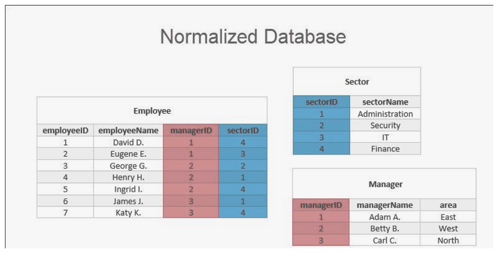
--- The primary advantages of normalization are
- Minimize Redundancy - By ensuring that each piece of data is stored in only one place, normalization reduces the redundancy of data within the database.
- Data Consistency - Normalization improves data consistency as each data item is stored in only one place. Any update needs to be performed only in one place, reducing the chances of inconsistent data.
- Efficient Use of Storage - Normalized databases are more compact and often require less storage space, especially for large databases.
- Simplified Data Management - Normalization simplifies the management and updating of data as it ensures that a piece of information exists in one place only.
Normalized Data Systems, such as OLTP (Online Transaction Processing) systems, use normalized databases. These systems require high data integrity and support a large number of short online transactions (INSERT, UPDATE, DELETE).
Example
Databases for managing sales transactions, customer relationship management (CRM) systems, airline reservation systems, and banking systems. These systems rely on data normalization to ensure data consistency and efficiency in processing a high volume of transactions.
Denormalized Data#
Data Denormalization is the process of combining data from several normalized tables into one, for the purpose of improving read performance, simplifying queries, or preparing the data for specific analytical requirements. This is the opposite of normalization, where data is separated into multiple tables to minimize redundancy and improve data integrity.
Denormalization may lead to data redundancy and anomalies (like insert, update, or delete anomalies), but it reduces the need for complex joins and can therefore enhance the performance of read-heavy applications.
Denormalized Data Systems, such as OLAP (Online Analytical Processing) systems or data warehousing systems, use denormalized databases. These systems are designed for reporting and data analysis, and they support complex queries against large amounts of data. The data in these systems is typically read-only or infrequently updated, and the emphasis is on retrieval speed rather than transaction speed.
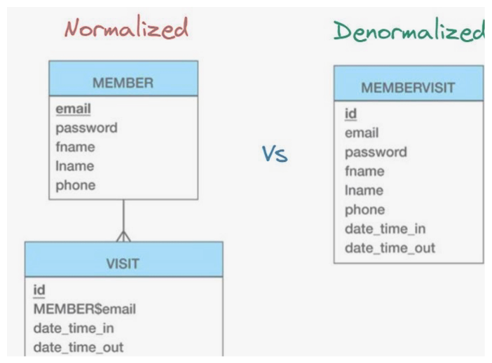
--- Here are some key characteristics of denormalized data systems
- Data Redundancy - Since data is combined into fewer tables, some data can be repeated or redundant.
- Read Optimization - Denormalized databases can retrieve data faster because they often need fewer joins to answer a query.
- Complexity - By reducing the number of tables, the database structure becomes simpler, and complex queries can be more easily written.
- Data Integrity - In denormalized databases, maintaining data integrity can be more challenging due to potential redundancy.
- Usage - Denormalized data systems are commonly used for data analysis, data mining, data warehousing, and any system where reading data is more important than updating or inserting data.
Note
It's important to note that denormalization doesn't mean that normalization principles are entirely abandoned. Rather, it's a strategic optimization for specific read-heavy use cases.
--- Normalized vs Denormalized
| Aspect | Normalized Data | Denormalized Data |
|---|---|---|
| Structure | Data is spread across multiple tables to eliminate redundancy and dependency | Data is combined into fewer tables to speed up data retrieval |
| Redundancy | Redundancy is minimized; each data item is stored in only one place | Redundancy may be introduced to improve read performance |
| Performance | Writing data (INSERT, UPDATE, DELETE) is usually faster; reading can be slower due to multiple joins | Reading data is typically faster due to fewer joins; writing can be slower because of redundancy |
| Data Integrity | Higher, as redundancy is eliminated | Lower, as redundancy can lead to inconsistencies |
| Use Case | Optimized for transactional systems like OLTP, where write operations are common | Optimized for analytical and reporting systems like OLAP, where read operations are common |
--- Which is better depends on your use case
- Choose Normalized Data when - You are dealing with transactional systems (like OLTP), where write operations (insert, update, delete) are common and the data integrity is crucial. This includes applications like online retail websites, banking systems, CRM, etc.
- Choose Denormalized Data when - You are dealing with analytical systems (like OLAP), where read operations and speed of data retrieval are more important than write operations. This is common in reporting, data mining, and decision support systems.
It's important to remember that this is not an either/or situation. Often, in a single system, a part of the database might be normalized (to support transactional operations) and another part might be denormalized (to support analytical operations). It's all about choosing the right tool for the right job based on your specific needs.
Data Warehouse Internals#
While a business user might view the Data Warehouse as a single entity, it internally consists of two primary layers:
This is where data first arrives from source systems. It acts as a temporary or permanent holding area before transformation.
This is the layer that business users and Business Intelligence (BI) tools interact with. It contains the finalized, modeled data
--- The Staging Layer (Extract Phase)
The primary goal of this layer is to pull data from source systems as quickly as possible without worrying about complex transformations or modeling.
Data is usually moved from the source table to a corresponding staging table with the same structure.
No dimensional modeling is applied at this stage; the focus is purely on extraction
--- Types of Staging layer
- Non-Persistent Staging Layer
Data is loaded into staging, processed into the User Access Layer, and then immediately deleted or truncated.
Extract → Load to Stage → Transform to Access Layer → Truncate Stage.
Requires significantly less storage space and has lower security/governance risks since the layer is usually empty.
If the DWH becomes corrupt, you must go back to the original source systems to rebuild it.
- Persistent Staging Layer
Data is kept in the staging layer even after it has been loaded into the User Access Layer.
Extract → Load to Stage → Transform to Access Layer → Retain Data in Stage.
You can rebuild the User Access Layer without hitting the source systems again. It also makes Quality Assurance (QA) easier because you can compare the final data directly against the landed raw data.
Higher storage costs and increased security risks, as sensitive data remains in multiple locations
--- The User Access Layer (Modeling Phase)
In this layer, data from various staging tables is consolidated into Master Tables using Dimensional Modeling. This is where inconsistencies (like different column names for "city" or "location") are resolved
Data Warehouse Transformations#
The transformation phase occurs after data is extracted from source systems and before it is loaded into the final Data Warehouse tables. The two main objectives of this phase are:
-
Uniformity: Ensuring that data coming from different sources (like different retail zones) follows a consistent format and standard.
-
Restructuring: Adjusting the data structure (number of columns and rows) to match the predefined Data Warehouse model
--- Data Value Unification
Different source systems often use different values to represent the same information. Transformation is required to map these varying source values into a single, uniform standard in the Data Warehouse.
Example
Zone 1 uses a Status column with values "Active" or "Inactive," while Zone 2 uses an Active column with "Y" or "N"
--- Data Type and Size Unification
Sources may have technical mismatches in how they define columns, such as different data types or character limits.
-
Type Mismatch: One system might use VARCHAR while another uses CHAR.
-
Size Mismatch: Zone 1 might allow 25 characters for a name (CHAR(25)), while Zone 2 allows 35 (CHAR(35)). The Data Warehouse must decide on a standard (e.g., 35) to prevent data loss or "trimming"
--- De-duplication
In a retail environment, the same customer might make purchases in different zones. If that customer is not already in the master table, both zones might try to flow that record into the Data Warehouse as a "new customer," leading to duplicates. Since a Data Warehouse is non-volatile, de-duplication logic must be applied before final writing
--- Dropping Columns and Records
- Dropping Columns: Unnecessary data, such as specific auditing columns that have no analytical value in the DWH, are removed during transformation.
- Dropping Records: Unwanted rows (e.g., data for employees who have left) can be filtered out. While companies often prefer changing a status to "Inactive" rather than deleting, the DELETE command or filtering is a common transformation step
--- Error Correction and Null Handling
Data might arrive with errors, such as a Null value in a "Sales Amount" column. Engineers have two main options:
-
Drop the record: If the data is too corrupt to be useful.
-
Fix the error: Assign a logical value, such as the average sales amount for that day or assigning a missing pin code based on the location where the customer shops most frequently
--- Initial Load vs. Incremental Load
The loading process is generally categorized into two types:
• Initial Load: This is a full load conducted only once before the Data Warehouse goes live. It extracts all necessary data from various source systems, applies transformations, and loads it into the DWH.
• Incremental Load: To keep the DWH up-to-date, incremental loads are performed at regular intervals (daily, weekly, or monthly). These loads only capture the changes that occurred since the last load—for example, processing data changes between November 8th and November 9th. While the DWH is "non-volatile," it must periodically enter a "volatile" state during these load windows to accept new data
--- Types of Data in Incremental Loads
Incremental loads handle three main types of data changes:
• New Data: Records for new entities, such as a newly registered customer or a newly launched product.
• Modified Data: Updates to existing records, such as an employee getting a promotion (role change) or a change in a product's price.
• Deleted Data: Handling data that is no longer needed. In a DWH, data is often not physically deleted but is instead marked as "Inactive" (e.g., when an employee resigns). It may also involve removing very old data to maintain a specific historical window (e.g., keeping only the last 2 years)
DataLake#
Data Lake is a storage repository, usually on a large scale, that holds a vast amount of raw data in its original, native format until it's needed. Unlike a traditional data warehouse, which stores data in a structured and often processed format, a data lake retains all data—structured, semi-structured, and unstructured—and does not require the schema to be defined before storing the data.
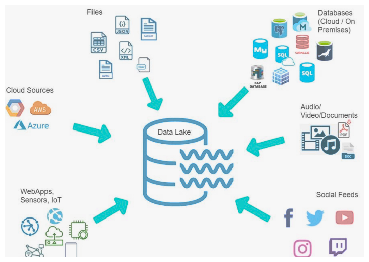
--- Here are some reasons why we need data lakes
- Data Variety - Can store any type of data (structured, semi-structured, unstructured), accommodating the wide variety of data formats in big data.
- Scalability - Can handle massive volumes of data and quickly scale as data grows.
- Cost-Effective - Utilizes inexpensive, commodity hardware for storing large amounts of data.
- Data Exploration - Allows for exploratory data analysis, which is essential for data discovery and advanced analytics.
- Data Integration - Acts as a central hub for all organizational data, creating a unified data view.
- Real-time Processing - Supports both batch and real-time data processing, suitable for real-time analytics.
- Schema on Read - Doesn't require data modeling before storing, offering flexibility in data usage.
DataMart#
A Data Mart is a subset of a data warehouse that is focused on a specific area of business, such as sales, marketing, finance, or HR. Essentially, a data mart is a condensed version of a data warehouse that is tailored to fit the needs of a specific business unit or team.
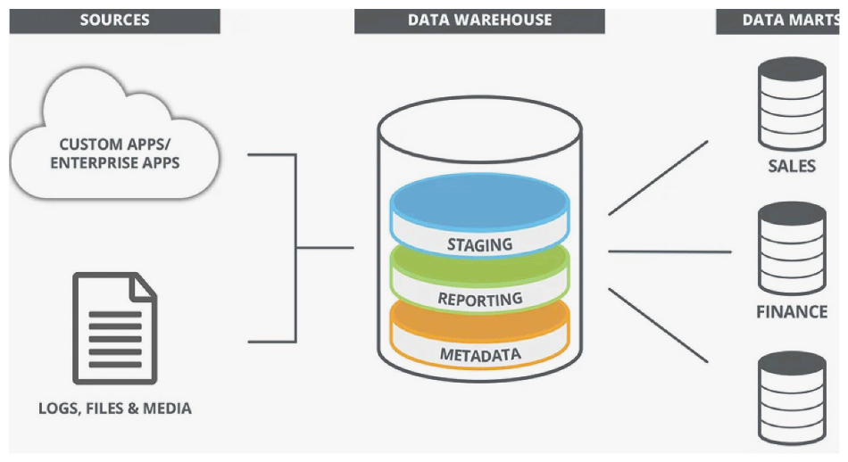
--- Here are the reasons why we need data marts
- Focused Business Insights - Since data marts focus on a specific area of business, they can provide more detailed and relevant insights for a specific department or team.
- Improved Performance - With less data to process, queries run faster in data marts, improving response times for users.
- Ease of Use - Data marts are simpler and more intuitive for end users because they only contain data relevant to a specific business area. Users don't need to sift through unrelated data, which makes their analysis faster and more efficient.
- Autonomy - By having their own data mart, a business unit can maintain control over their data, making decisions on data handling, and access based on their unique needs and priorities.
- Less Risk - With data marts, you can start small and grow over time. This approach reduces the risk and cost compared to implementing a full data warehouse at once.
- Increased Security - It's easier to secure data because data marts only hold a limited set of data. Therefore, even if a breach occurs, the amount of exposed data would be less compared to a full data warehouse.
Despite these advantages, it's essential to ensure that data marts are well-coordinated within an organization to avoid issues like data duplication or data inconsistencies. Sometimes, an organization may choose a hybrid approach, having a central data warehouse for the entire organization, and then creating data marts for specific departments or functions.
Data Modeling#
Data Modelling, on the other hand, is a specific part of the data warehouse design process. It involves creating a conceptual model of how data should be structured in the database.
Data modeling typically consists of three levels: conceptual, logical, and physical. The conceptual model defines high-level entities and relationships, the logical model defines tables and attributes, and the physical model represents the actual database implementation including datatypes and indexes.
| Data Model | Real Life |
|---|---|
| Conceptual | Idea of house |
| Logical | House blueprint |
| Physical | Actual construction |
--- Difference between Data Warehouse Design & Data Modelling
Data Warehouse Design and Data Modelling are interrelated concepts in the field of data management, but they focus on different aspects. Here's a brief comparison -
Data Warehouse Design refers to the process of creating a blueprint for the data warehouse system. It includes the decision-making and planning for -
- Data sources - Identifying the sources from where data will be pulled.
- Data transformation - Defining how data will be cleaned, transformed, and integrated.
- Data storage - Choosing the structure in which data will be stored, such as deciding between a normalized or denormalized schema, or choosing between different architectures like a Star Schema, Snowflake Schema, etc.
- Data retrieval - Planning for how data will be queried and retrieved, such as creating indexes, views, or OLAP cubes.
- Security and backup - Defining how the data will be secured, how privacy will be maintained, and how data will be backed up.
--- FACT table
A Fact Table is a central component of a star schema or a snowflake schema in a dimensional modelling. It is the main table in a dimensional model, which holds the quantitative or measurable data that a business wishes to analyze.
Fact tables typically contain two types of columns -
- Fact - These are the measurable, quantitative data points that are relevant to the business. They are usually numerical values that can be aggregated (like summed, averaged, etc.). Examples of facts could be 'Sales Amount', 'Quantity Sold', 'Profit', etc.
- Foreign Keys - These are the keys that connect the fact table to its associated dimension tables. These keys enable you to categorize your facts and look at them from different perspectives.
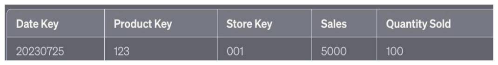
Example
For instance, in a retail business scenario, a fact table might have a structure like this -
In this case, 'Sales' and 'Quantity Sold' are the facts. 'Date Key', 'Product Key', and 'Store Key' are the foreign keys linking the fact table to the dimension tables for 'Date', 'Product', and 'Store', respectively. This design allows you to analyze your sales and quantities from different dimensions like time, product type, and location.
--- Dimension Table
The main purpose of a dimension table is to provide context and descriptive attributes for facts stored in the Fact Table in the same dimensional data model. This allows users to understand and interpret the quantitative values in the fact table.
Characteristics of dimension tables include -
- Descriptive - Dimension tables store descriptive or textual data, often referred to as "attribute data." For example, the Product dimension table might include details like product name, product type, product category, etc.
- Granularity - The granularity of a dimension table is at the level of the individual instance. For instance, each row in a Product dimension table would represent a single product.
- Primary Key - Each dimension table has its own primary key, which is used to connect the dimension table with the fact table(s).
- Hierarchical - Dimensions often include a hierarchy of categories. For instance, a "Time" dimension might include fields for Year, Quarter, Month, and Day.
- Stability - While fact table data changes frequently, dimension table data is relatively stable. However, dimension tables can change in response to business changes, such as adding a new product or a new sales region.
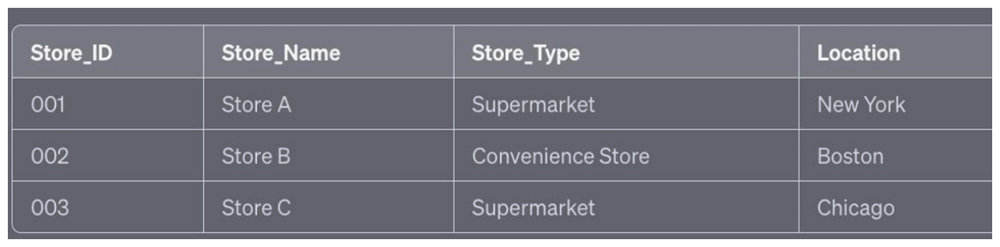
Example
In this example, 'Store_ID' would be the primary key that connects this dimension table to the fact table, and the other columns ('Store_Name', 'Store_Type', 'Location') provide descriptive details about each store.
Dimension tables help in performing meaningful analysis of the fact data. They allow the business users to look at the data from various perspectives and help in slicing and dicing the fact data.
--- The 4-Step Dimensional Design Process
- Step 1: Select the Business Process
The first step involves understanding the business domain—whether it is Retail, Real Estate, or Insurance. You must sit with stakeholders to identify the end goal of the analysis.
What does the business do? What specific measurements do you want to analyze (e.g., sales price, patient behavior)?
To analyze which products are selling, in which store, on which day, and under what promotional activity.
- Step 2: Declare the Grain
The Grain is the level of detail stored in each record of the Fact table. It is one of the most critical decisions for a data modeler.
It is recommended to capture data at the lowest possible (atomic) level. While this increases storage size because you have more records, it allows you to answer ad-hoc and unknown future questions.
If you store data at an aggregated level (e.g., total sales per customer per day), you cannot later answer questions about specific products.
- Step 3: Identify Dimensions
Dimensions provide the context (Who, What, When, Where) for the facts. Once the grain is correctly declared, identifying dimensions becomes much easier.
They answer descriptive questions and provide the "context" for the measurements.
- Step 4: Identify the Facts
Facts are the quantitative measurements resulting from the business process (e.g., Sales Quantity, Price). The selection of facts is directly dependent on the Grain you defined in Step 2
--- Derived Facts vs. Database Views
A Derived Fact is a measurement calculated from other existing facts, such as Profit (Profit = Sale Price - Cost).
• Storage Trade-off: Storing derived facts physically in a table increases the database size and storage costs.
• Using Views: To save space, some modelers prefer using a View. A View is a virtual table that runs a query at runtime to calculate these values without storing them physically
--- Types of Additive Facts
Additive facts are measurements that can be summed across any dimension associated with the Fact Table. These are the most common and useful facts for business analysis.
Example
Sales Amount. You can sum sales for a specific date, for a specific store, or for a specific product without generating a "nonsensical" result
Non-additive facts are measurements that cannot be summed along any dimension. Attempting to add these values results in a "nonsensical" or incorrect figure.
Example
Unit Price: If one soap costs ₹25 and another costs ₹60, saying the total unit price is ₹85 makes no sense.
Temperature: If yesterday was 45°C and today is 28°C, they cannot be added to say the total temperature is 73°C.
Profit Percentage: You cannot simply add percentages (e.g., 10% + 5%) to get a total
Semi-additive facts can be summed along some dimensions but not all. Typically, they can be added across dimensions like Store or Product, but cannot be added across the Time/Date dimension.
Example
Inventory (Quantity on Hand). Can Add (Store/Product): If Store A has 500 units and Store B has 200 units on Nov 25th, the total inventory for that day is 700.
◦Cannot Add (Time): If you had 500 units on Monday and 400 on Tuesday, you cannot say you have 900 total units in the inventory; you simply have 400 units remaining
--- Types of Fact table
- Transaction Fact Table
This is the most common type of fact table. It captures data at the most granular level—the individual transaction or event.
One Record per Transaction: Every time an event occurs (like a sale), a new row is added.
Data Volume: These are typically the largest tables in a Data Warehouse, often containing billions or trillions of rows.
Usage: Best for Point of Sales (POS) data, such as a pharmacy where every medicine sold in a prescription is captured as a separate line item.
- Periodic Snapshot Fact Table
Instead of capturing every single movement, this table takes a "snapshot" of the data at a specific, regular interval (daily, weekly, or monthly).
Time-Based Performance: It is used to track changes over time, similar to a "75-day hard challenge" where you take a photo every day to see progress.
Best Use Case: Inventory Management. It tracks how many products are "on hand" at the end of each day.
The Challenge (Data Explosion): This table grows extremely fast. If you have 1,000 stores and 10,000 products, you generate 10 million records every single day, even if the stock levels didn't change.
Optimization: Companies often keep only the last 3 months of daily data and aggregate older data to save storage.
- Accumulating Snapshot Fact Table
This table is used to track a process that has a well-defined start and end point with multiple milestones in between.
Single Record per Lifecycle: Unlike the other two, a record here is updated multiple times as it moves through different stages.
Best Use Case: Order Fulfillment or Supply Chain. For example, an Amazon order: Order Placed \(\rightarrow\) Picked \(\rightarrow\) Shipped \(\rightarrow\) Delivered.
Lag Analysis: It is excellent for identifying "bottlenecks." By looking at the time difference between "Received" and "Inspected," managers can see where the process is slowing down.
| Fact Table Type | Record Frequency | Data Action | Primary Goal |
|---|---|---|---|
| Transaction | One per event | Insert Only | Detail/History |
| Periodic Snapshot | One per interval | Insert Only | Performance over time |
| Accumulating | One per lifecycle | Update multiple times | Process/Lag analysis |
--- What is a Factless Fact Table?
In a standard fact table, you have measurements—numbers like 200 (representing $200 or 200 items sold). A Factless Fact Table is a table that does not contain these traditional numerical measurements.
• The Key Difference: In these tables, the entire record (row) itself is treated as the measurement or the "fact". It captures the occurrence of an event or a relationship between dimensions even if no numerical quantity is associated with it.
--- Importance of the Date Dimension Table
A Date Dimension is unique because it is one of the few tables you can pre-calculate and populate for years into the future. While product tables require new products to exist before entry, a date table can be built today to cover the next 20 years.
• Tracking Growth: It allows businesses to see how sales or products are performing over time (stagnant, growing, or declining).
• Partitioning: Data in a Data Warehouse is often partitioned by date, which significantly improves query performance during joins.
--- Determining Data Frequency
The "grain" or frequency of the records determines the table's size and utility.
• Daily (Standard): 99% of use cases use one record per day. For 20 years of history, this is only ~7,300 records, making it a very manageable table.
• Hourly: Used for specific high-velocity scenarios like an "Amazon Prime Day Sale" to track hourly roll-ups of sales. This results in ~175,200 records over 20 years.
• Per Minute: This results in ~10 million records for 20 years, making it difficult to manage and rarely necessary.
--- Table Structure and Schema
A robust Date Dimension contains more than just a date; it includes various attributes to simplify business reporting.
--- Why Not Just Use SQL Date Functions?
A common question is why a separate table is needed if SQL functions like YEAR() or MONTH() can extract data from a timestamp.
-
Complexity and Errors: Calculating attributes on the fly is an expensive operation and prone to human error.
-
Missing Attributes: Raw timestamps do not contain Holiday Indicators (which vary by company) or Fiscal Year/Month information needed for tax and financial reports.
-
Performance: While joining is an expensive operation, fetching pre-calculated data from a small dimension table is often more efficient than performing complex calculations on billions of fact rows.
--- Design Best Practices: Clarity vs. Storage
When designing indicators (like Holiday or Weekday), there is a trade-off between storage and intuitiveness.
• The Storage View: Using single-character codes (e.g., Y/N or W/E) saves space. For 20 years of data, using full words like "Holiday" instead of "Y" only adds about 65.6 KB of extra storage.
• The Business Intelligence (BI) View: The end goal of a Data Warehouse is to support decision-making. Reports that explicitly say "Holiday" or "Non-Holiday" are much more intuitive for business users than codes.
• The Verdict: Because the storage impact is negligible (~65 KB), it is better to store descriptive strings to make reports immediately readable without requiring the user to memorize codes
- The Product Dimension Table
The primary goal of dimension modeling is to provide data in a way that is simple and accessible for decision-makers, BI analysts, and data scientists.
Master Table: Managed by a specialized team, this table contains every product ever sold by the company (e.g., 50,000–60,000 records). Entries are never deleted from the master table, even if a product is discontinued, to maintain historical records.
Active Products: Only a subset (e.g., 10,000) of these products are currently active and sold across various stores.
Store-Level Fetching: Each store fetches only the product data it needs from the master table based on its specific location and ID. A product only appears in a Sales Transaction table if it is available in that specific store.
A Product Dimension table includes descriptive columns that provide context for sales measurements.
- The Problem of Redundancy (Star Schema)
In a Star Schema, all these attributes are stored in a single, flat dimension table. While simple, it leads to significant data redundancy.
Example: If there are 50,000 products but only 20 departments, the value "Bakery" will be repeated roughly 2,500 times in the department column.
Storage Issues: Storing detailed descriptions for departments or categories within the same table results in many redundant columns and massive storage waste.
- Snowflake Schema and One-to-Many Hierarchies
The Snowflake Schema solves redundancy by breaking the flat dimension table into multiple related tables based on hierarchies.
One-to-Many Hierarchy: One department contains many categories, and one category contains many sub-categories.
Implementation: The main Product table stores a Foreign Key pointing to a sub-category table, which in turn points to a category table, and finally to a department table.
- Measurements in Dimension Tables
Occasionally, a numerical measurement like Standard Price is stored in a dimension table.
When to keep in Dimension: If the price is a fixed attribute that rarely changes and is only needed for occasional lookups.
When to keep in Fact: If the measurement is used for continuous, heavy analysis (e.g., calculating potential revenue: Standard Price Quantity), it should be stored in the Fact table for performance.
- Analytical Operations: Drill-down and Roll-up
These terms describe how analysts change the level of detail (grain) in their reports.
Drill-down (Roll-down): Moving from a high-level summary to a more detailed level by adding columns to the GROUP BY clause.
Example: Moving from "Department Sales" to "Sales by Brand within a Department".
Roll-up (Drill-up): Aggregating data to a higher level of the hierarchy. Example: Aggregating monthly data into quarterly or yearly summaries.
By drilling down, a business might discover that while a department's sales are high, a specific brand within that department is underperforming, allowing for targeted improvements.
--- Conformed Dimension
A Conformed Dimension is a single dimension table that is used across multiple fact tables in a Data Warehouse.
Most Common Example: The Date Dimension table is the most frequent example because it is created once and reused for various fact tables, such as Retail Sales or Promotion Coverage.
Advantage of Consistency: By using the exact same table (not a copy), you avoid redundant storage and confusion between teams.
Standardization: It ensures that column names and meanings remain the same (e.g., using "Calendar Month" everywhere), which helps Business Intelligence (BI) tools maintain accurate and consistent levels for Drill-up and Drill-down operations.
--- Role Playing Dimension
A Role Playing Dimension occurs when a single dimension table plays multiple "roles" within the same fact table.
Example: In an Inventory Accumulating Fact Table, you might have three different date IDs: Date_Received_ID, Date_Inspection_ID, and Last_Shipment_Date_ID.
Implementation via Views: Instead of creating physical copies of the date table, you create a View (a logical entity that uses no physical storage) for each role. This allows you to alias column names to match their specific roles (e.g., renaming Date_Key to Order_Date_Key).
This method makes joins easier and ensures column names make sense for specific business use cases without wasting storage.
--- Junk Dimension
A Junk Dimension is used to handle low-cardinality information (like "Yes/No" flags or status indicators) that would otherwise clutter a large fact table and waste storage.
The Problem: If you have a 1-billion row fact table and store text like "Payment Mode" (Cash/Card/UPI) and "Promotion" (Yes/No) directly in it, you could waste billions of bytes of storage.
The Solution: Instead of creating multiple tiny dimension tables for each flag, you merge all possible combinations into a single "Junk" dimension table.
The Cartesian Product: The number of records in a junk dimension is the product of all flag options (e.g., 4 Payment Modes × 2 Promotion flags × 2 Commission flags = 16 total records).
Before (Direct Storage): Storing flags as text strings might take 9 Billion bytes (9 GB) for a 1-billion row table.
After (Junk Dimension): By replacing those strings with a single small integer ID pointing to a 16-row junk dimension, you only use approximately 2 Billion bytes (2 GB), saving 7 GB of storage while keeping the fact table concise.
--- Slowly Changing Dimension (SCD)
| Dimension Type | Definition | Key Benefit |
|---|---|---|
| Conformed | One table used across multiple fact tables. | Data consistency and standardized reporting. |
| Role Playing | One table used multiple times in one fact table. | Logical separation of identical data types (e.g., different dates). |
| Junk | One table merging multiple low-cardinality flags. | Massive storage savings and cleaner fact tables. |
| SCD | A dimension that changes slowly over time. | Tracks historical changes in data. |
--- The Problem: Transactional Table Issues
In a raw transactional system, a single table often contains both context (customer names, product details) and measurements (sales quantity, date).
Data Redundancy: Storing information like a customer's name ("Manish") every time they make a purchase leads to massive duplication.
Costs: If there are 1 billion records, repeating the same descriptive data 1 billion times significantly increases storage costs and computation costs.
Solution: Data modelers split these tables into a central Fact table (measurements) and surrounding Dimension tables (context).
Conceptual SQL Example: From Transactional to Structured
-- RAW TRANSACTIONAL TABLE (Redundant)
-- Columns: Date, Product_Name, Product_Category, Customer_Name, Sales_Qty
-- STEP 1: Split into Dimensions
CREATE TABLE dim_customer AS SELECT DISTINCT customer_id, customer_name FROM raw_data;
CREATE TABLE dim_product AS SELECT DISTINCT product_id, product_name, category FROM raw_data;
-- STEP 2: Create Fact Table (Compact)
CREATE TABLE fact_sales AS
SELECT date_id, customer_id, product_id, sales_qty FROM raw_data;
Primary Key (PK)#
A Primary Key is a column (or set of columns) that uniquely identifies a specific row in a table.
Identification: In a raw product table, columns like Category or Sub-category may contain duplicate values (e.g., "Education" appearing multiple times) and cannot be primary keys. However, a Product ID (like 101, 102) is unique to each item and serves as the Primary Key.
- No Nulls: A Primary Key column cannot contain empty or null values.
- No Duplicates: Every entry must be unique; duplicate entries are strictly prohibited.
- Quantity: A table can have only one Primary Key.
- Format: It can be Numeric (e.g., 101) or Alpha-numeric (e.g., 101ABC).
--- Transitioning from De-normalized to Normalized Tables
De-normalized Table: Contains repetitive text like "Education," "Kitchen," or "Grocery" across thousands of rows.
Normalization Process: This involves splitting the large table into smaller, specialized tables (e.g., Category Table, Sub-category Table) and using ID references instead of repeating full text.
Trade-off: While normalization saves storage, it requires multiple joins to retrieve the full information for a report.
Conceptual Code Example: Splitting Tables
-- DE-NORMALIZED (Redundant)
-- Product_ID | Product_Name | Category_Name
-- 101 | Book | Education
-- 102 | Pen | Education
-- NORMALIZED (Efficient)
-- Table: Categories
-- Cat_ID | Cat_Name
-- 1 | Education
-- Table: Products
-- Product_ID | Product_Name | Cat_ID (Foreign Key)
-- 101 | Book | 1
-- 102 | Pen | 1
Foreign Key (FK)#
A Foreign Key is essentially a Primary Key from another table that is used in the current table to establish a relationship.
Function: It links tables together. For example, a Category_ID in the Product table "points" to the Primary Key of the Category table to identify which category a product belongs to.
Core Features:
Null Values: Unlike Primary Keys, Foreign Keys can have null values if the information is missing.
Duplicates: They can have duplicate values (e.g., many products belonging to the same Category ID).
Relationship: They are used to fetch details through Joins.
Composite Key#
A Composite Key is used when a single column is not enough to uniquely identify a record in a table.
Requirement: In scenarios where multiple rows share the same ID but have different attributes (like price), one column alone fails the uniqueness test.
Definition: It is a combination of two or more columns that together create a unique identifier for a row.
Example: If "Pressure Cooker" has the same Product ID for both 2-liter and 5-liter versions, you might combine Product ID + Price to uniquely identify each specific product record.
Conceptual Code Example: Composite Key
-- Neither Product_ID nor Price is unique on its own
-- Product_ID | Product_Name | Price
-- 501 | Pressure Cooker | 1000
-- 501 | Pressure Cooker | 1500
-- COMPOSITE KEY = (Product_ID + Price)
-- Together, they uniquely identify the 2L vs 5L version.
--- Summary Table
| Feature | Primary Key | Foreign Key |
|---|---|---|
| Uniqueness | Must be unique | Can be duplicate |
| Nulls | Not allowed | Allowed |
| Purpose | Identify a row | Link tables/establish relationships |
| Limit | One per table | Multiple allowed per table |
Natural Key (Business Key)#
A Natural Key is an identifier that is derived directly from business values and carries specific meaning,.
Structure: It often combines multiple attributes to create a code. For example, a product key might be SG4025, which decodes to SG (Sugar), 40 (Price: ₹40/kg), and 25 (Expiry Year: 2025).
Pharmacy Example: In the pharmaceutical industry, a natural key might combine the drug name (e.g., Paracetamol), dosage (500mg), batch number, and manufacturing location into one long string.
Usage: It is often used in transactional systems to help business users identify records quickly.
Conceptual Code Example (SQL): In a transactional system, a natural key might be stored as a string:
-- Creating a table using a Natural Key (Business Key)
CREATE TABLE sales_source (
product_business_key VARCHAR(50) PRIMARY KEY, -- e.g., 'SG4025'
quantity INT,
customer_id VARCHAR(20) -- e.g., 'MANI1234'
);
--- Problems with Natural Keys in a DWH
While natural keys work in simple systems, they present several challenges in a Data Warehouse environment:
- Violation of Uniqueness: If a customer’s address changes, a new record might be created. If the natural key is based on their name and phone number (which haven't changed), the Primary Key constraint is violated because the same key now points to two different address records,.
- Merging Systems: When two companies merge (e.g., Reliance and Big Bazaar), they may have different logic for generating natural keys, or they might have overlapping IDs, leading to duplicates when the data is combined,.
- Storage Inefficiency: Natural keys are often long Alpha-numeric strings. Since these keys must be stored in the Fact Table as Foreign Keys, they waste significant storage space (bytes) and degrade query performance,.
- Indexing: Indexing on long strings is much slower and more difficult than indexing on integers,.
Surrogate Key#
A Surrogate Key is an artificial, numeric identifier generated within the Data Warehouse to act as the Primary Key for a dimension table.
Characteristics: Numeric and Incremental: It is usually an auto-generated integer (1, 2, 3, etc.),. No Business Meaning: Unlike a natural key, it carries no information about the product or customer; it is just a unique identifier for that specific row. Guaranteed Uniqueness: Because the Data Warehouse generates it, uniqueness is guaranteed even if source systems change or merge,. Internal Use: It is applied in the Fact and Dimension tables but is not used in transactional (source) systems.
Conceptual Code Example (SQL): A Surrogate Key is typically an auto-incrementing integer:
-- Adding a Surrogate Key to a Dimension Table
CREATE TABLE dim_product (
product_sk INT PRIMARY KEY, -- Surrogate Key (Auto-increment)
product_business_key VARCHAR(50), -- The original natural key
product_name VARCHAR(100),
is_active BIT
);
-- Fact Table uses the small INT Surrogate Key as a Foreign Key
CREATE TABLE fact_sales (
sales_id INT,
product_sk INT, -- Foreign Key to Dimension
sales_amount DECIMAL,
FOREIGN KEY (product_sk) REFERENCES dim_product(product_sk)
);
--- Summary Comparison
| Feature | Natural Key (Business Key) | Surrogate Key |
|---|---|---|
| Origin | Source/Transactional System | Data Warehouse (Internal) |
| Format | Often Alpha-numeric strings | Always Numeric (Integers) |
| Business Meaning | Yes (e.g., Price/Expiry in key) | No business meaning |
| Uniqueness | May be violated during merges/updates, | Guaranteed unique (auto-generated) |
| Performance | Slower joins/indexing due to size | Faster joins/indexing |
| Storage | High (more bytes per record) | Low (compact integers) |
Surrogate keys are essential for handling Slowly Changing Dimensions (SCD) Type 2, where historical changes must be tracked without breaking relationships between tables.
------------------------------------------------------------------------------------------------------------
Star Schema#
The Star Schema is a simple yet powerful database architecture used in data warehousing and business intelligence reporting. The star schema gets its name from the physical model's resemblance to a star shape with a fact table in the middle surrounded by dimension tables.
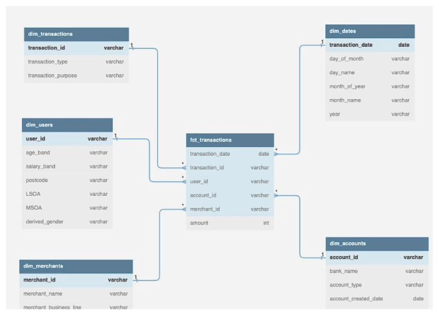
- Fact Table - At the center of the star schema is the fact table. This table contains the quantitative or measurable data (the "facts") that the business wants to analyze. For example, in a retail business, the fact table might store transaction data like units sold and total sales. Fact tables often contain a large number of rows, reflecting the detailed level of data they store.
- Dimension Tables - Surrounding the fact table are dimension tables. These tables contain descriptive data that provide context to the facts. For example, in the retail business scenario, the dimension tables might include information on products, customers, stores, and dates. Each row in a dimension table represents a unique instance of that dimension, like a specific product or a specific store.
- Schema Layout - In a star schema, each dimension table is directly connected to the fact table via a foreign key relationship. The fact table includes a foreign key for each dimension table that it's linked to. These foreign keys enable the joining of the fact table with dimension tables.
- Simplicity - The star schema is denormalized, which means it does not strictly enforce certain data integrity rules that are required in a normalized database design. This denormalization simplifies the database design and makes it easier to write and run queries.
- Performance - The star schema is designed for efficient data retrieval and is the standard schema for a reason. The simple, predictable queries, reduced number of tables, and minimized joins make it ideal for handling complex business queries and aggregations.
------------------------------------------------------------------------------------------------------------
Snowflake Schema#
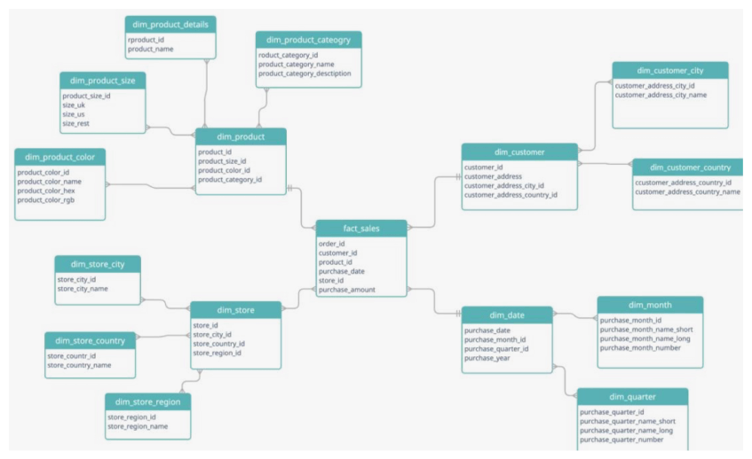
The Snowflake Schema is a type of database schema that is used in data warehousing. It's a variant of the star schema, but with additional levels of complexity due to further normalization of the dimension tables. It's called a "snowflake" schema because its diagram resembles a snowflake with spokelike arms branching out from a center.
- Fact Table - Similar to the star schema, the snowflake schema also consists of a central fact table which contains the business data (facts) that are being analyzed. This could include things like sales amounts, quantities, and so forth.
- Normalized Dimension Tables - In the snowflake schema, the dimension tables are normalized. This means that the data in the dimension tables is split or segregated into additional tables. For example, instead of having a single "Product" table that includes all product-related information, you might have a main "Product" table linked to separate tables for "Product Category" and "Product Manufacturer". This normalization reduces data redundancy.
- Schema Layout - In a snowflake schema, the fact table is at the center with multiple branching dimension tables, which can have other tables branching off of them. This multi-level relationship between the fact table and dimension tables gives the schema its snowflake-like appearance.
- Query Complexity - Due to the additional level of normalization, queries in snowflake schemas can become more complex as they may involve more tables and joins. This might lead to longer query times, but it can also lead to more efficient storage.
- Storage Efficiency - One of the main advantages of the snowflake schema is the reduction in storage required due to the normalization of dimension tables. This can also lead to improved data integrity as it helps to eliminate redundancy and inconsistencies.
------------------------------------------------------------------------------------------------------------
Galaxy Schema#
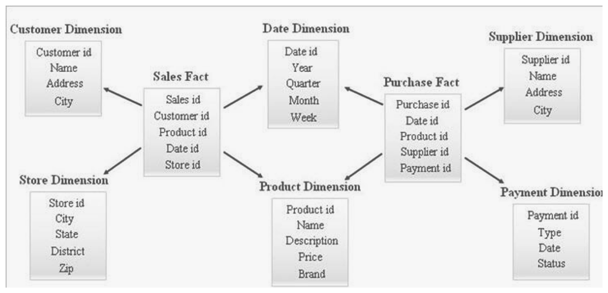
A Galaxy Schema, also known as a Fact Constellation Schema, is a complex type of schema used in data warehouse environments. It extends the concepts of the Star and Snowflake schemas by allowing multiple fact tables to share dimension tables.
- Multiple Fact Tables - Unlike the star and snowflake schemas, which have a single fact table, a galaxy schema can have multiple fact tables. Each fact table in a galaxy schema represents a different business process or event.
- Shared Dimension Tables - The dimension tables in a galaxy schema are often shared among fact tables. This makes it possible to analyze facts from different fact tables across shared dimensions.
- Schema Layout - The galaxy schema looks like multiple star or snowflake schemas combined, where the fact tables form the center of each star or snowflake, and the dimension tables branch out from there. The shared dimensions form the intersecting points between these multiple stars or snowflakes.
- Complexity - Galaxy schemas are typically more complex than star or snowflake schemas. They involve more tables, more relationships, and more complex queries. However, they also offer more analytical capabilities due to the ability to compare and analyze multiple facts across shared dimensions.
- Flexibility - One of the main advantages of the galaxy schema is its flexibility. It allows for complex analyses and queries across multiple business processes or events. This can be particularly useful in large organizations with complex data needs.
------------------------------------------------------------------------------------------------------------
SCD#
SCD stands for Slowly Changing Dimensions, which are a common concept in Data Warehousing, Business Intelligence, and data modeling. These dimensions are the aspects of the business that can change over time, but not at a high frequency, hence "slowly changing."
--- SCD Type 1 (Overwrite)
In this type, when changes occur in attribute values, the old values are overwritten with new ones. No history is kept in this scenario, only the current state is stored. This approach is typically used for minor or correctional changes where tracking the history is not important.
Example
Let's take an example of a customer dimension where the customer's address is an attribute. If a customer changes their address, in a Type 1 SCD, the new address would simply replace the old address in the customer dimension table.
--- SCD Type 2 (Add a new row)
This type is used when it is necessary to maintain a full history of data changes. When changes occur, instead of updating the existing records, a new row is added with the new values, and the original record is marked as inactive or retained with a flag indicating that it is the old version.
Example
In the same customer dimension example, if the customer changes their address and we are using a Type 2 SCD, a new row would be added for the customer with the new address, and the old address row would be marked as inactive or have a flag indicating it's an old version. This way, we have a complete history of all addresses the customer has had over time.
--- SCD Type 3 (Add a new column)
In this type, when changes occur, a new column is added to the table to track the changes. This is generally used when we are only interested in maintaining the current value and the immediate previous value.
Example
In the customer dimension example, if the customer changes their address and we are using a Type 3 SCD, a new column would be added (e.g., "Previous_Address") to store the old address, and the "Address" column would be updated with the new address. This method allows us to see the current and previous address but doesn't keep a full history of all addresses.
---SCD Type 4 (Using History Table)
This method involves the use of a separate history table to track the changes. When a change happens, the current table (dimension table) gets updated, and the old record gets pushed into the history table. This method keeps the dimension table lightweight but provides full historical context in the separate table.
Example
If a customer changes their address in a Type 4 SCD setup, the customer's current address in the main customer table would be updated with the new address, and the old address would be stored in a separate customer address history table.
--- SCD Type 6 (Combination of Type 1, 2, and 3)
Also known as a hybrid method, this combines elements of Type 1, Type 2, and Type 3 SCDs. This method usually holds one or more current attributes (Type 1), one or more historical attributes (Type 2), and may include a "previous value" column for specific attributes (Type 3).
Example
If a customer changes their address in a Type 6 SCD setup, a new row would be added with the new address (like Type 2), and the old row may be kept as it is or updated in a Type 1 style for certain attributes. Additionally, there might be a column in the new row capturing the previous address (like Type 3).
Please note that Type 4 and Type 6 are less commonly used due to their complexity, but they do provide additional options for handling changes over time in a data warehouse environment. The decision on which type to use depends on the specific needs of your business and the resources available for managing the data warehouse.
--- Slowly Changing Dimensions (SCD) – Raw Examples
Sample Source Data
Customer C001 changes address on 2024-06-01
| customer_id | name | address |
|---|---|---|
| C001 | Rahul | Mumbai |
--- SCD Type 1 – Overwrite (No History)
Dimension Table (customer_dim)
| customer_id | name | address |
|---|---|---|
| C001 | Rahul | Pune |
Old value (Mumbai) is overwritten No history maintained
--- SCD Type 2 – Add New Row (Full History)
Dimension Table (customer_dim)
| surrogate_key | customer_id | name | address | start_date | end_date | is_active |
|---|---|---|---|---|---|---|
| 101 | C001 | Rahul | Mumbai | 2022-01-01 | 2024-05-31 | N |
| 102 | C001 | Rahul | Pune | 2024-06-01 | 9999-12-31 | Y |
Full history maintained Time-based analysis possible
--- SCD Type 3 – Add New Column (Limited History)
Dimension Table (customer_dim)
| customer_id | name | current_address | previous_address |
|---|---|---|---|
| C001 | Rahul | Pune | Mumbai |
Only current + previous value No complete historical tracking
--- SCD Type 4 – History Table
--- Current Dimension Table (customer_dim)
| customer_id | name | address |
|---|---|---|
| C001 | Rahul | Pune |
--- History Table (customer_address_history)
| customer_id | address | change_date |
|---|---|---|
| C001 | Mumbai | 2024-05-31 |
Dimension table remains small Full history stored separately
--- SCD Type 6 – Hybrid (Type 1 + 2 + 3)
Dimension Table (customer_dim)
| surrogate_key | customer_id | name | current_address | previous_address | start_date | end_date | is_active |
|---|---|---|---|---|---|---|---|
| 201 | C001 | Rahul | Mumbai | NULL | 2022-01-01 | 2024-05-31 | N |
| 202 | C001 | Rahul | Pune | Mumbai | 2024-06-01 | 9999-12-31 | Y |
Type 2 → New row Type 3 → Previous address column Type 1 → Non-historical attributes can be overwritten
--- Summary Table
| SCD Type | History | Technique |
|---|---|---|
| Type 1 | No | Overwrite |
| Type 2 | Full | New rows |
| Type 3 | Limited | New column |
| Type 4 | Full | History table |
| Type 6 | Full + Quick Access | Hybrid |
Types of Databases#
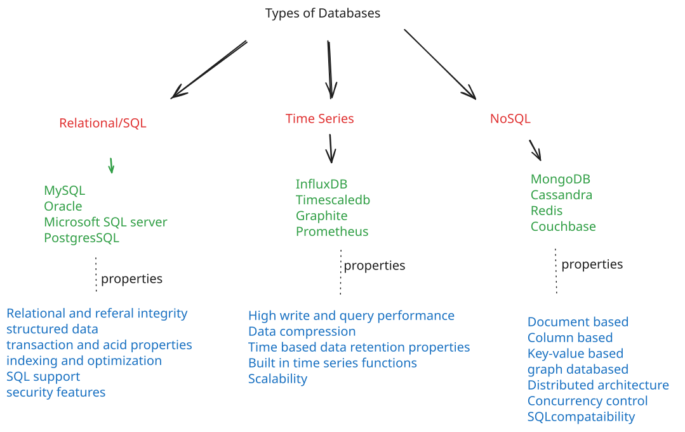